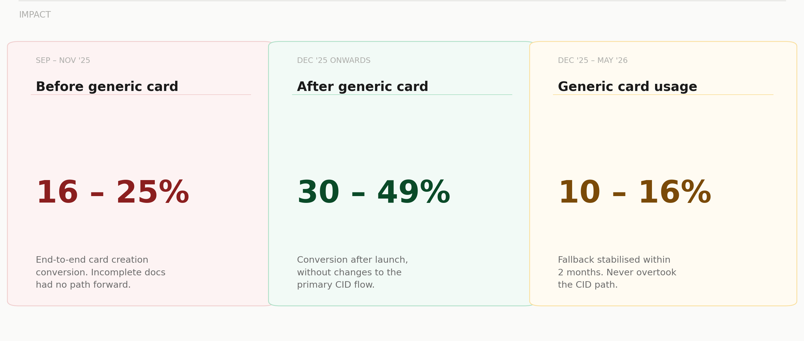

IOCL Generic Cards: Designing fallback without making it the default
52% of users failed to get IOCL fuel cards. Generic cards fixed that. The design challenge was keeping it a fallback, not the default.
Context
BlackBuck partners with oil companies to make fuel cards available to users, who can use them at petrol pumps while earning rewards. For IOCL, once a customer verifies and purchases a fuel card, they're assigned a Customer ID (CID). Multiple cards can then be issued under a single CID.
Why are we talking about IOCL?
When business reviewed the IOCL fuel card purchase journey, they found that only 52% of users completed the journey. The other 48% were getting stuck.
This case study isn't just about improving that metric. It's about how a solution that could've gone wrong was shaped by design to go right. It focuses on the importance of friction and how appropriate use of it can be a guide rather than a pain.
The problem we were tackling
When the 48% drop was analyzed, we found:
Generic cards solve this by bypassing Customer ID (CID) creation entirely. Instead of issuing a card under the truck owner's identity, the card is created under BlackBuck's own CID. The card works immediately for fuel transactions, and these cards undergo manual KYC verification going forward.
However, the card also carried layers of risk since they operated under BlackBuck's CID rather than the truck owner's, with manual KYC verification post-issuance. Considering this, generic cards needed to be strictly treated as a fallback.
This is where design came into play to understand the behavioral risks and create appropriate friction to make sure the exception road didn't become the highway.
Understanding the behaviour of customers and agents
We had to design for two parts of this solution: mobile application changes for customers, and ops portal changes for agents.
Tier 2/3 truck drivers with low digital literacy
Through customer calls and interviews, we learned that linear flows work best for them. They're instinctively curious and navigate by tapping what's prominent, not by reading what's correct. To give users a chance to move ahead with creating their own CID as the primary flow, we needed a sequencing mode of design for the generic card fallback.
The fallback should arrive as a rescue that is visible only after the primary path has genuinely failed, not as a competing option from the start.
Processing 500–1000 applications per day under speed pressure
Agents aren't rewarded for being thorough. They're incentivized by speed. An agent processing high volume would unintentionally skip the path of more effort — not because they're lazy, but because they follow the path of least resistance to hit targets faster.
The fallback should feel intentional, structured, and accountable. This means introducing deliberate friction — friction that acts as a guardrail and reminds agents that this is a fallback feature.
The designs for mobile app
The standard IOCL card creation flow starts with consent, moves through application details, and arrives at OTP verification. This is where 23% of users were dropping off. The OTP either didn't arrive or arrived for the wrong number.
The generic card option is not shown at the beginning of the flow, or even at the OTP screen when it first loads. It only appears after the 60-second countdown expires — as an orange banner at the bottom of the OTP screen. By that point the user has already waited, already tried, and is already frustrated.
The fallback arrives as a contextually relevant solution, not a shortcut that competes with the primary flow.


The designs for the ops portal
The ops portal is where agents review applications and create CIDs for truck owners. 83% of cases are routine. The other 17% hit exceptions with unclear documents and minor KYC mismatches. This is where the agent needs a way to still move the application forward.
For this, generic card creation exists on the portal too. Agents must select a structured reason for routing to generic, and explicitly give consent via a checkbox that they have reviewed all submitted documents. It's not a wall. It's a moment of declared accountability before a non-standard decision.
The Impact
(Sep–Nov '25)16–25%
conversion rate↑
(Dec '25 onwards)30–49%
The generic card flow gave ops a legitimate, documented path for the 17% of applications that previously had nowhere to go. Every exception is now logged with a stated reason and an explicit consent action, creating an audit trail that enhanced accountability.
Generic card creation has consistently stayed within the 10–16% range month over month. This is a signal that the fallback is being used as designed, not as a workaround.

What this project taught us
Generic cards aren't technically complex. But the design challenge was real: how do you create a responsible shortcut that doesn't become the default?
The answer was different for each user. For the truck owner, the shortcut earns its way in — visible only after the primary path has genuinely failed. For the ops agent, the shortcut exists but requires declared accountability through structured reasons and explicit consent.
Both solutions come from the same principle: friction isn't always bad. Applied correctly, friction becomes a guide that shapes behavior toward the right choice.
Not all friction is bad friction. Friction becomes harmful only when it impedes the right action. When applied to sensitive workflows, friction becomes a guide.